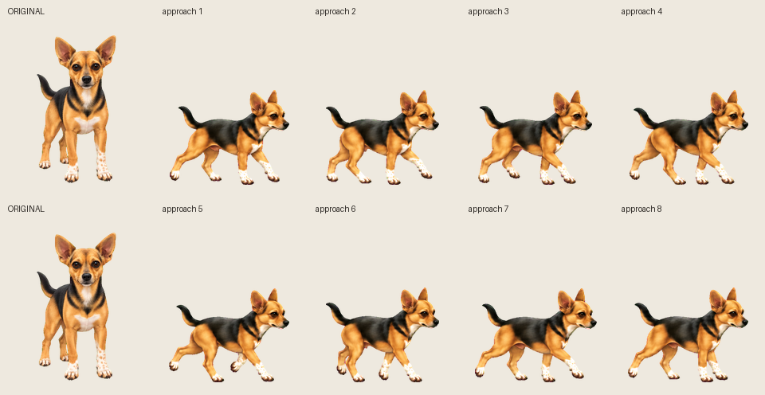
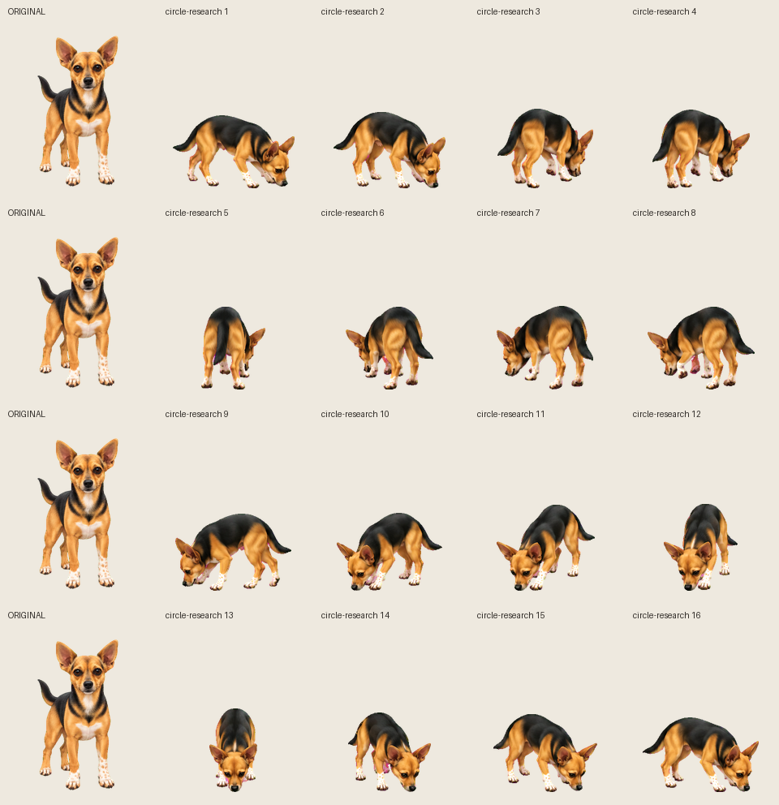

BED ENTRY · CHECKPOINT 1 OF 3
Approach the bed and circle
Video references and observations · Previous draft
Motion draft — not locked. Video-guided revision: Ronnie lowers her nose, follows a tighter turn and pauses to investigate the cushion. Her original atlas remains the appearance reference. Foot contacts and the change from approach to lowered head still need refinement; this is a review draft.
Playback ends standing in the bed. The settling checkpoint now shows lowering and tucking into her approved curled pose for review. No game code has changed.
Approach poses and original reference

Turning poses and original reference

GIF preview · Timing and positions · Review findings